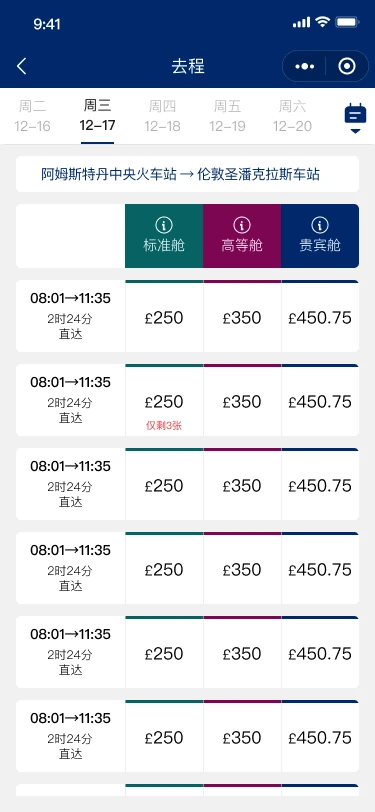

Eurostar · 微信小程式
讓 Eurostar 的訂票選擇更清楚
從輸入行程到確認車票，梳理站點、日期、乘客和票價選項，讓使用者能逐步確認自己的選擇。
行程搜尋、旅客設定、班次比較與車票確認介面。



Eurostar · 訂票互動原型
在里爾換車，要留多少時間？
- 11:04倫敦聖潘克拉斯Eurostar
- 13:26里爾歐洲站
- 銜接時間 35 分鐘
- 14:01里爾歐洲站SNCF
- 15:11馬恩拉瓦萊－謝西
示例班次
在里爾換車
向上滑動班次列表，起訖站會固定在頂部。展開第一班車，試著選較晚的接續列車，再收起比較抵達時間。
設計取捨
列表先回答「幾點到、要花多少錢」。換乘展開在同一行，第一段車程留在原處；改選接續班次時，同步更新等候時間與整程抵達時間。
如何走查
走查時先選 14:31 的接續班次，再收起詳情。核對抵達時間是否同步變成 15:41、再展開是否保留原選擇，以及向上滑動後能否說出正在比較哪段路線。
在 IT Consultis，我參與訂票旅程梳理、競品比較與改版建議。四項升級沿著旅客實際做決定的順序展開。
預設值
讓回訪旅客從上次行程開始
原流程每次搜尋都要重填。我建議把最近使用的起訖站與乘客帶入搜尋頁，日期預填今天或明天。第一次購票時由旅客選站，每項預設都可修改。
人數預設只省去重填。若改為青年單獨乘車，當下才顯示年齡要求與確認項。


選擇車站
從認得的城市，找到正確的車站
原本的字母側欄難以解釋分組規則，旅客也未必知道車站的拼法。改版建議以國家、城市組織相關車站，保留搜尋入口，移除無關選項。
在中文站名旁保留英文名，讓旅客能拿同一組文字核對實體指標與車票。

比較車票
滑到下一班，仍知道正在比較哪段行程
列表上滑時將起訖站固定在頂部，按班次並列時間與各艙等票價。原流程的車次識別資訊不足；建議補足班次資訊，餘票少於 30 席時才顯示數量。
在同一行展開兩段列車，讓旅客按自己的步調選接續時間。範例中保留倫敦出發的第一段，選晚一班會同時改變在里爾的停留時間與終點抵達時間。

切換日期與時間
鄰近日期用滑的，跨週行程直接開日曆
原結果頁只能看到固定三天。建議讓頂部日期列可以橫滑，點日期即可開完整日曆，保留起訖站繼續比較其他天。
往返旅程也要容許先改去程。若新去程超過原返程，再請旅客重選返程；最後把兩段車票放回確認頁一起核對。


出票前核對整段行程